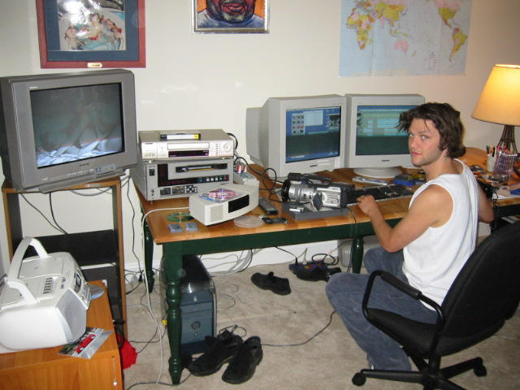
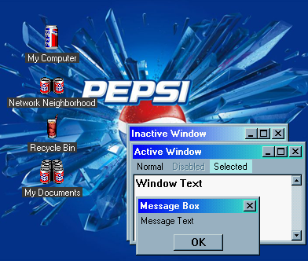
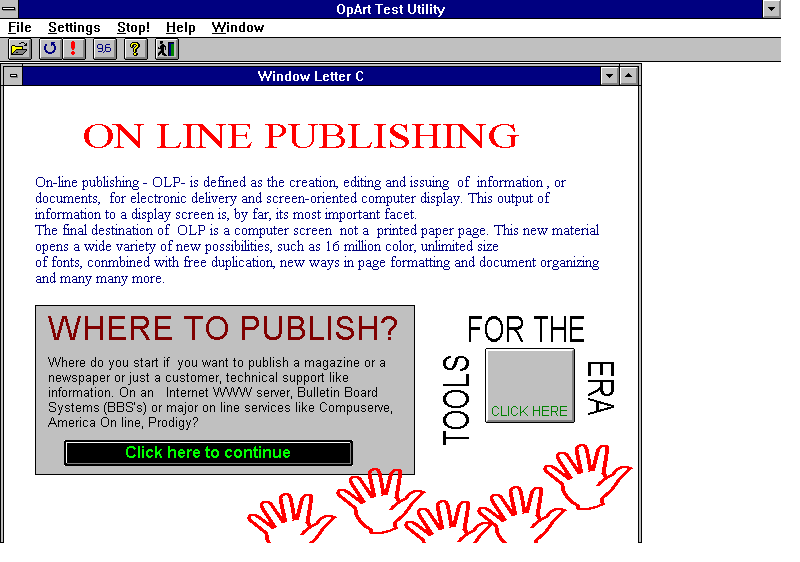

USA 1987
USA 1987
Windows NT 4.0 - Logon Sound

Bam Margera’s editing room in 2001

hey


Pepsi desktop theme for Windows 95/98 [link]


#9

Windows 95 default start sound


Welcome to 1995.
56k, baby!


You know what? Everyone else creates ask memes, so I’ll try making one suitable to the retrotech crew & associated folks.
1. What’s your favorite vintage computer? Commodore VIC-20, no question there. It’s been a favorite of mine for awhile now by being capable of so much with such basic hardware.
2. What’s your favorite vintage game system? Atari 2600 probably. I think that’s why my collection of games for it is the most extensive.
3. Do you remember what got you into the hobby? A video tape I watched on the last day of the year in computer science class that talked about the history of the computer industry, and how computers started being produced for home use. I’m still searching for whatever documentary we watched back in 2004. It’s probably the singular moment that changed everything for me.
4. What’s the most unique or esoteric item in your collection? Probably my Arrakis Systems Digital Network Audio Controller II, an industrial rack-mount 386 machine. I doubt many of those are out there. It’s not all that special apart from its branding or application.
5. Is there a defunct company you wish was still with us? Why? Commodore Business Machines. Imagine the possibilities…
6. If you could have any one thing in your collection, what is it? One of the Commodore LCD prototypes. Barring that unrealistic goal, a CGRS Microtech System 6000.
7. Do you have a repair job or a hack you’ve pulled off that you’re most proud of? Fixing the power supply on my Data General Nova 1200, probably. That was a learning experience that look a lot of steps and help from others, but the results speak for themselves.
Let’s see… let’s start by tagging @virescent-phosphor @aperture-in-the-multiverse @ms-dos5 @floppy-diskette @duckgwr @techav @teckheck @tumblokami @waisillenst @hutchins1 @oldguydoesstuff @retrobear @retrotech @analog-punk @vintagecomputers @56k-modem
1. What’s your favorite vintage computer? Any IBM PC.
2. What’s your favorite vintage game system? Never owned a console, so PC.
3. Do you remember what got you into the hobby? No special moment for me, it was rather a process sparked by my Dad’s home office computer(s), computing classes in high school and my Mom buying me my first PC.
4. What’s the most unique or esoteric item in your collection? A 486 monochrome laptop my Dad used in the early 90s.
5. Is there a defunct company you wish was still with us? Why? GeoCities and Napster.
6. If you could have any one thing in your collection, what is it? My first PC:
Abit BE6 mobo, Celeron 433 CPU, 256MB RAM, Voodoo 3 2000 GPU, 6 GB HDD.
7. Do you have a repair job or a hack you’ve pulled off that you’re most proud of? When I rescued all the files from my little sister’s dying HDD using CloneZilla.


40 Games


